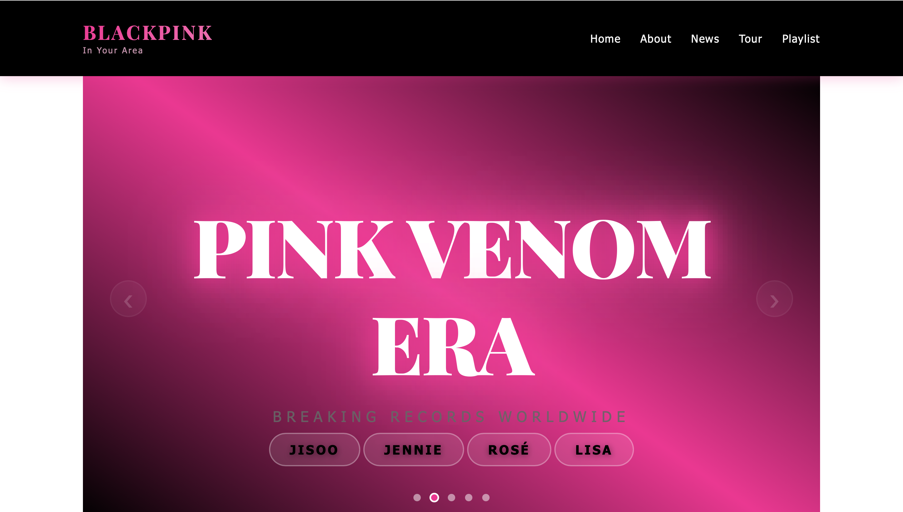
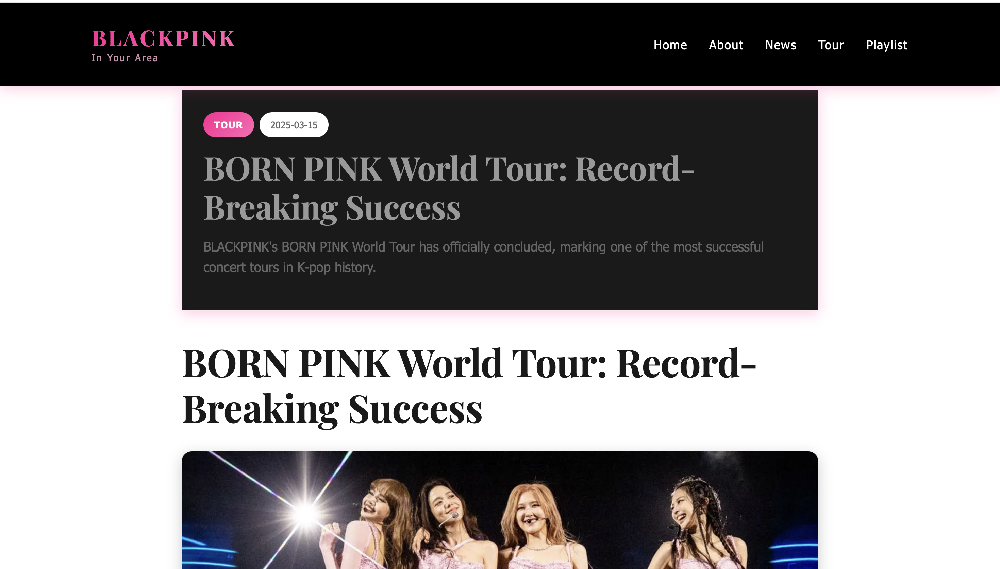
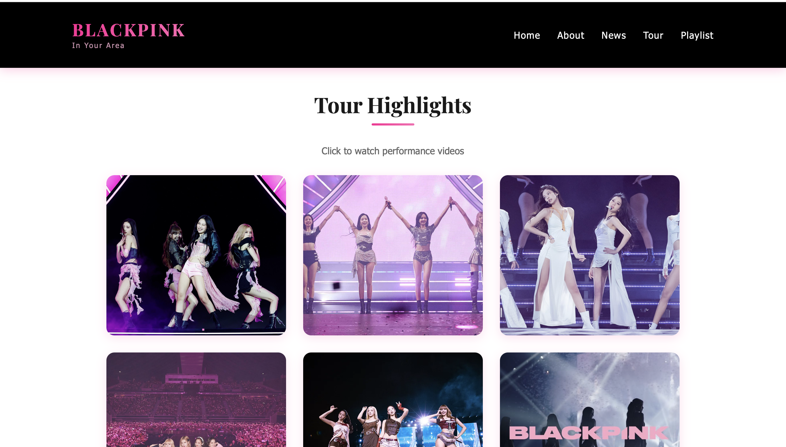
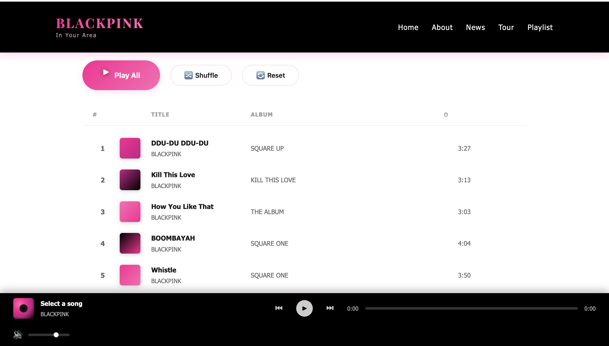

The Blackpink Fan Website is a multi-page editorial project dedicated to the world-famous K-pop group. It features dedicated sections for their biography, latest news, world tour schedules, and a curated music playlist.
The main goal of this project was to build a highly visual and engaging platform. I wanted to organize a large amount of media content into a clean layout that fans would find easy to navigate. This project served as a great opportunity to strengthen my core frontend development skills without relying on heavy frameworks.




Music and fan websites often suffer from visual clutter. To prevent this, I established a strict design system based on the group's iconic "Pink and Black" color scheme. I used deep black backgrounds to make the high-quality photographs stand out, while using bright pink exclusively for buttons and important links to guide the user's attention.
Since a large portion of K-pop fans consume content on their smartphones, a mobile-first design approach was essential. I designed the typography and image grids to adapt smoothly to smaller screens. The navigation menu also transforms into a space-saving hamburger menu on mobile devices to ensure a seamless browsing experience.
While modern frameworks like React are powerful, I deliberately chose to build this website using only Astro, CSS3, and Vanilla JavaScript. As a junior developer, I believe it is crucial to have a deep understanding of the core web technologies before moving on to abstractions.
I utilized CSS Flexbox and CSS Grid extensively to manage the complex layouts, especially for the statistics section and the image galleries. This ensured that the layout remained stable and responsive across all device sizes.
For interactivity, I wrote custom vanilla JavaScript to handle the mobile navigation toggle, smooth scrolling, and dynamic content sliders. Writing these scripts from scratch improved my logical problem-solving skills significantly.
One of the main challenges was dealing with media-heavy content. High-resolution images can easily slow down a website. I had to optimize the images carefully and structure the HTML to ensure the pages loaded quickly without sacrificing visual quality.
Another challenge was maintaining the CSS code across five different pages. Since I was not using a component-based framework, keeping the styles consistent for buttons, headers, and footers required strict naming conventions. I used a modular approach to write my CSS, which kept the stylesheets organized and easy to update.